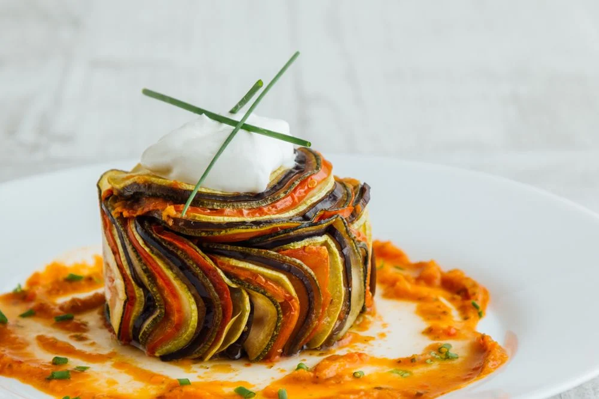
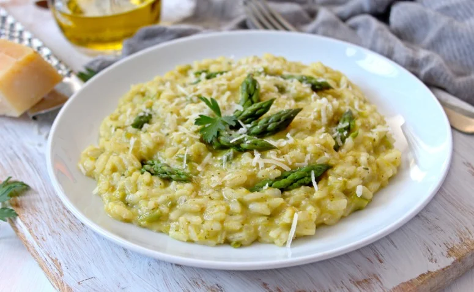
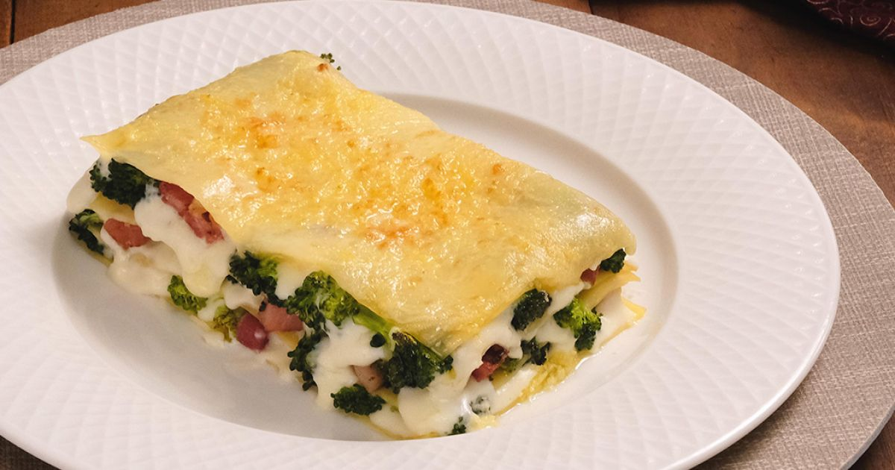
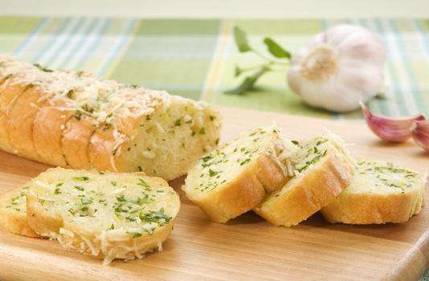
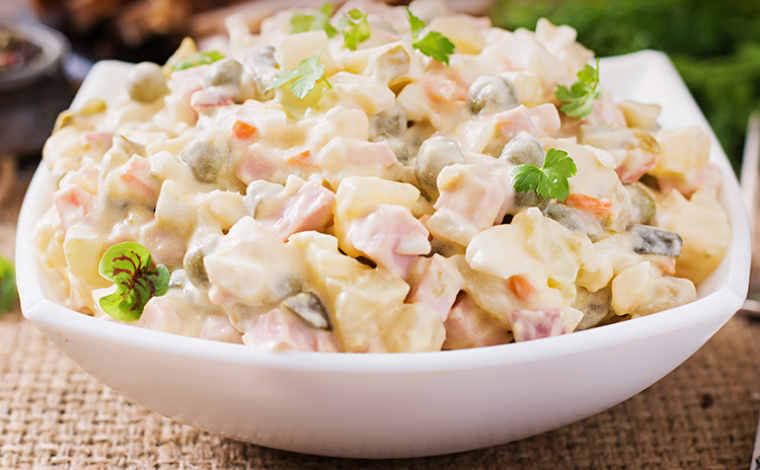
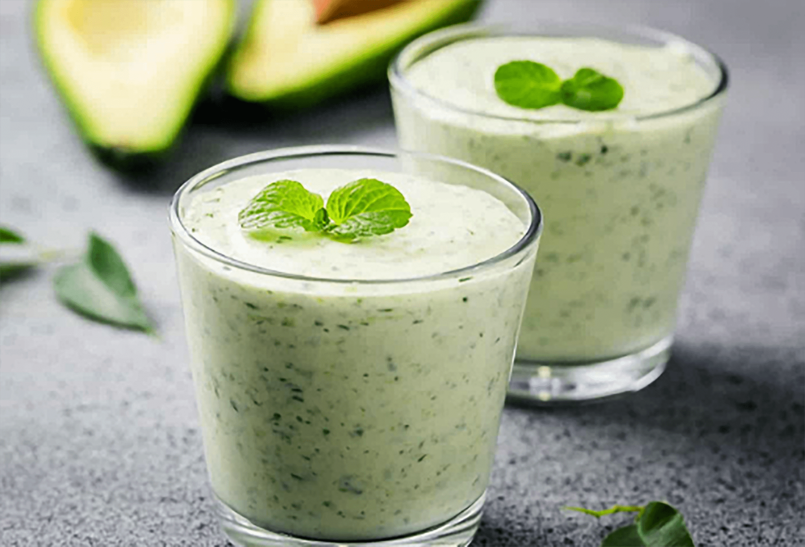
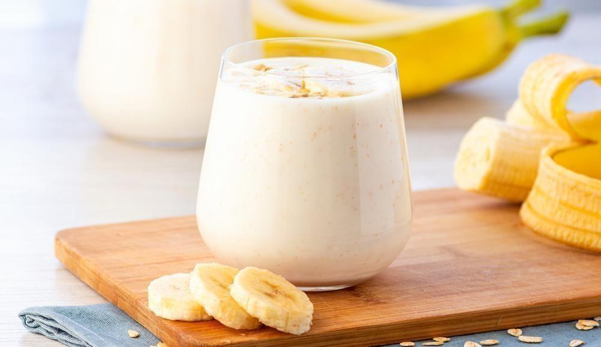
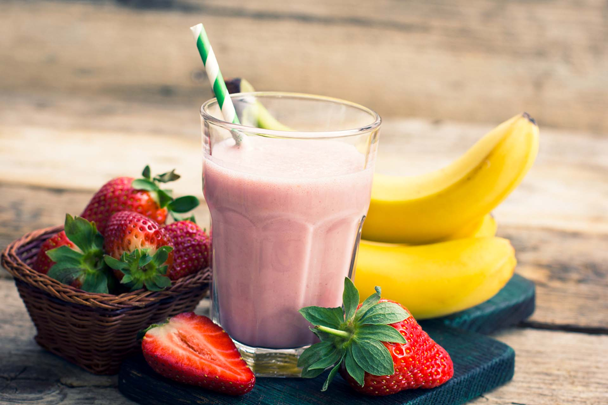

PRATOS PRINCIPAIS

RATATOUILLE
Valor: R$54,00
Uma combinação de legumes frescos cozidos em molho de tomate aromático. Sabores ricos e texturas variadas. Ideal como acompanhamento ou prato principal vegano.

RISOTO DE ALHO PÓRO
Valor: R$78,00
Alho-poró é um clássico do risoto. Mas este risoto de alho-poró vai além. Ele convoca o delicado dulçor da ervilha, a cremosidade do mascarpone e um trio marcante de ervas – tomilho, sálvia e alecrim – para ficar todo elegante.

LASANHA DE BRÓCOLIS
Valor: R$60,00
Experimente nossa deliciosa Lasanha de Brócolis vegana: massa de lasanha cozida, brócolis crocantes, molho de tomate caseiro e queijo vegano derretido. Uma opção saudável e saborosa que vai satisfazer seu paladar.
ACOMPANHAMENTOS

PÃO DE ALHO
Valor:R$22,00
Pão macio e aromático, coberto com manteiga vegana e alho fresco, resultando em um sabor irresistível. Uma opção vegana deliciosa para acompanhar suas refeições ou simplesmente saborear como petisco.

MAIONESE DE LEGUMES
Valor: R$30,00
Cremosa e saborosa, feita com legumes frescos. Perfeita para sanduíches, saladas e mergulhos. Experimente!
COGUMELOS

STROGONOFF DE COGUMELOS
Valor: R$65,00
Nosso delicioso strogonoff de cogumelos (shitake, shimeji e paris), vem acompanhado de arroz vermelho e batatas rústicas.

TACO DE COGUMELOS
Valor R$35,00
Deliciosos tacos crocantes recheados com com mix de cogumelos salteados e creme de queijo feta. Para finalizar, um toque de salsa tartufata italiana. (porção: 4 unidades)
VITAMINAS

VITAMINA DE ABACATE
Valor: R$65,00
Vitamina a base de leite vegetal e belos abacates adocicados

VITAMINA DE BANANA
Valor: R$65,00
Vitamina a base de leite vegetal e banana prata

VITAMINA DE MORANGO
Valor: R$65,00
Vitamina a base de leite vegetal e morangos frescos.